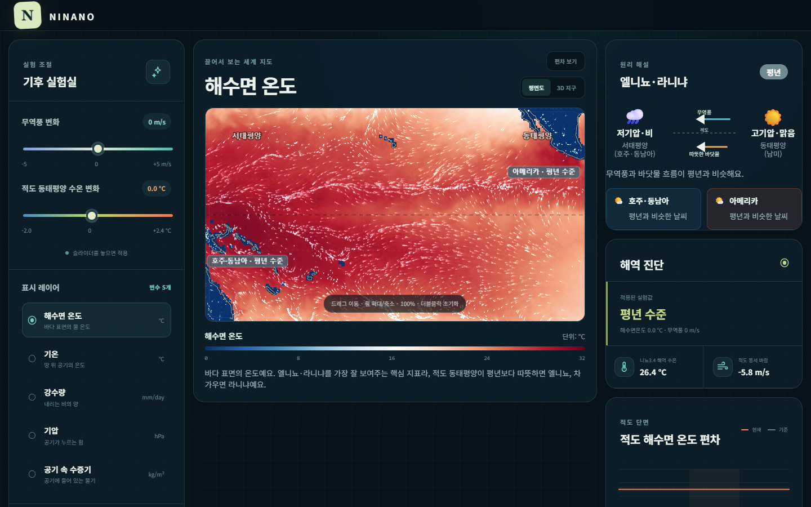
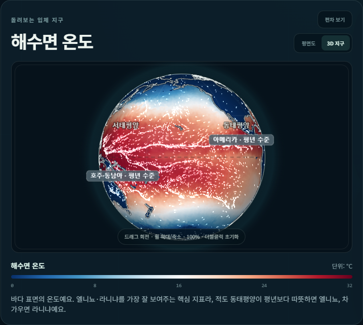
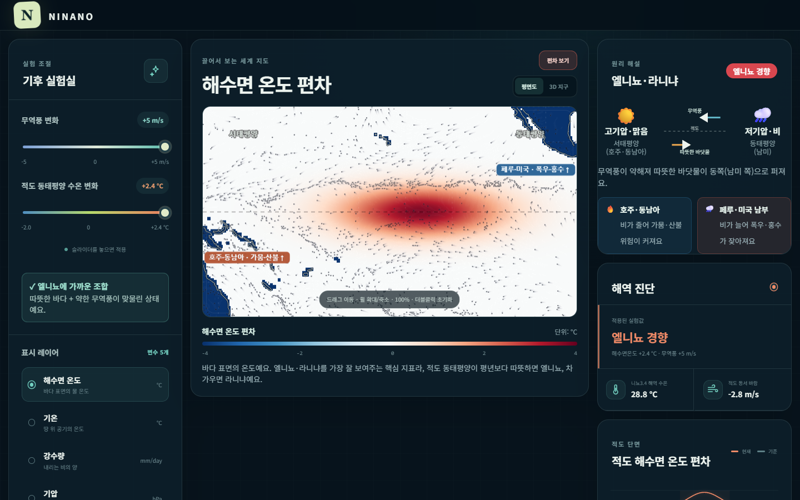
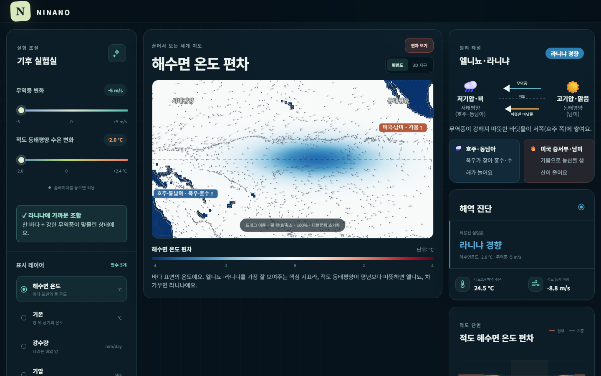
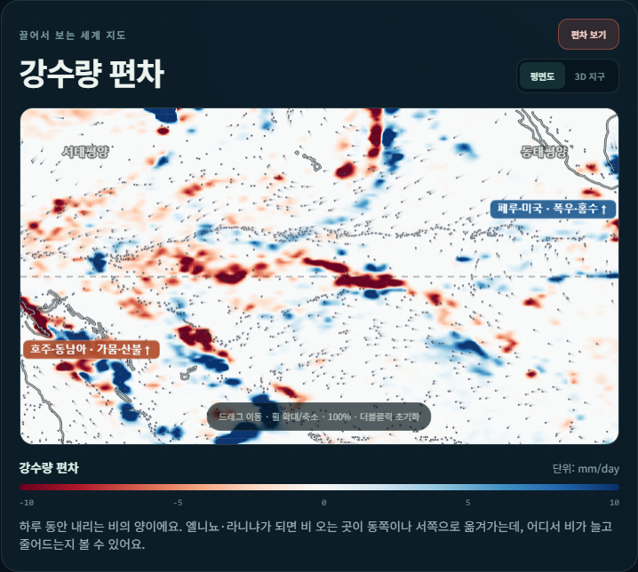

Unity 로그라이크 덱빌딩 게임 FFF의 팀 리더로 9개 씬 전체 흐름을 설계했고, WebGL2 실시간 렌더링 프로젝트 NINANO에서 6.9GB → 1.8GB 경량화와 끊김 없는 조작을 만들었습니다.
대학 리그 오브 레전드 대표팀에서 서포터로 뛰며, 흐름을 먼저 읽고 팀이 같은 판단을 하도록 돕는 일을 배웠습니다.
캡스톤 게임 FFF에서는 같은 역할을 개발로 옮겼습니다. 게임 전체 흐름과 씬 구조를 먼저 세워 두 팀원이 전투 · 아이템 기능을 그 위에 바로 붙일 수 있게 했고, 범위를 조율해 타이틀부터 엔딩까지 플레이 가능한 빌드를 일정 안에 완성했습니다.
해커톤에서는 생성형 AI 기후 모델의 결과를 WebGL2로 실시간 렌더링하며 GPU 텍스처, 입자 애니메이션, 캐시와 요청 취소로 조작감을 지키는 클라이언트 최적화를 경험했습니다.
독일학과 소프트웨어학을 함께 전공해, “무엇을 왜 만드는가”와 “어떻게 정확히 만드는가”를 같이 묻는 개발자가 되려 합니다.
주력프로젝트 핵심 기능을 맡아 구현 사용프로젝트에서 써 본 경험
| C# · Unity | 주력씬 흐름 · 매니저 구조 설계, ScriptableObject 데이터 설계, 시드 기반 절차적 맵 생성, UI · 애니메이션 · 사운드 시스템 FFF |
|---|---|
| C++ | 주력이벤트 기반 상태 관리와 mutex 동기화, CMake 빌드, 외부 라이브러리(RocksDB, D++) 위 확장 구현 ChronobreakSuribot |
| WebGL2 · GLSL | 주력R32F 텍스처 업로드, 색상 레이어 셰이더, GPU 입자 애니메이션, 3D 구 투영 NINANO |
| TypeScript · React | 사용렌더러를 감싸는 UI · 상태 관리, AbortController 요청 취소, LRU 캐시 NINANO |
| Python | 사용AI 모델(cBottle) 추론 결과 가공, NumPy 다운샘플 도구 NINANO |
| Unreal Engine | 사용학습 및 개인 실습 — 구체적인 결과물이 있으면 적고, 없으면 이 줄을 빼는 것을 권합니다 |
| 협업 | 주력Git Flow(main – dev – feature) 수립과 PR 병합 관리, 3인 팀 스크럼 · 일정 · 이슈 관리 FFF |
화투 · 섯다 족보 기반 1인용 로그라이크 덱빌딩. 게임 전체 흐름 · 9개 씬 구조, 시드 기반 맵 생성, 카드 · 덱 · 족보 판정, 연출 · UI · 사운드를 맡았습니다.
생성형 AI 기후 모델 결과 253개 조건을 슬라이더로 탐색하는 시뮬레이션. WebGL2 지도 · 3D 지구 · GPU 바람 입자 렌더링과 캐시 · 경량화를 맡았습니다.
RocksDB 컴팩션 필터로 세션 로그 되감기, 동시에 들어오는 이벤트를 mutex로 다루는 디스코드 봇.
| 게임 구조 설계 | FFF — Boot → Title → Main → Stage → Battle · Shop · Rest · Treasure → Ending, 씬 전환 책임 분리 |
|---|---|
| 절차적 생성 | FFF — 시드 기반 15층 × 7열 로그라이크 맵, 재현 가능한 런 |
| 데이터 주도 설계 | FFF — 카드 · 아이템 · 적을 ScriptableObject로 분리해 코드 수정 없이 밸런스 조정 |
| 렌더링 · 셰이더 | NINANO — GLSL 셰이더, R32F 텍스처, GPU 입자, 3D 투영 |
| 조작감 · 최적화 | NINANO — 요청 취소 + 96MiB LRU 캐시로 슬라이더 끊김 제거, 데이터 6.9GB → 1.8GB |
| 팀 개발 | FFF — 팀 리더 · 스크럼 마스터, Git Flow 수립 · PR 병합 관리 |
매 전투마다 화투 카드 2장을 내 섯다 족보로 공격력을 정하고, 보상으로 카드 · 조커 · 장신구를 얻으며 분기형 맵을 따라 보스까지 가는 게임입니다. 캡스톤 수업에서 3인 팀으로 기획부터 최종 빌드까지 진행했습니다.
GameManager · SceneLoader와 9개 씬 구조 설계. 노드 선택에 따라 전투 · 상점 · 휴식 · 보상 씬으로 보내고 맵으로 돌아오는 진행 전체.
MapGenerator로 시드 기반 15층 × 7열 분기 맵 생성, 노드 종류 배치와 맵 UI.
화투 카드를 ScriptableObject로 정의, 덱 시스템과 2장의 섯다 족보 판정(SeotdaJudge).
카드 · 전투 애니메이션, 로딩 화면, 상단 HUD, 상점 UI, BGM/SFX/UI 볼륨을 나눈 사운드 시스템.
BootScene이 전역 매니저를 한 번만 초기화하고, GameManager는 어디로 갈지만, SceneLoader는 실제 로드만, 씬별 SceneSetup은 로드 후 참조 연결만 맡도록 책임을 나눴습니다.SceneSetup만 작성하면 됐습니다. 뼈대를 먼저 세우는 것이 곧 팀의 개발 속도라는 것을 체감했고, 다음에는 씬 간 데이터 전달 규칙도 처음부터 문서로 정하겠습니다.MapGenerator가 시드 하나로 15층 × 7열 노드와 연결을 결정하게 했습니다. MapNode는 층 · 위치 · 방 타입 · 연결 정보만 갖고, 같은 시드면 같은 맵이 나옵니다.카드 · 아이템 · 적 데이터는 ScriptableObject로 두고, 런타임에 ID로 찾아야 하는 것만 Resources에 두는 기준을 정했습니다.
| 엔진 · 언어 | Unity 6 (6000.0.71f1), URP, C#, Visual Studio 2022 |
|---|---|
| 게임 흐름 | GameManager, SceneLoader, SceneSetup, 로딩 화면 |
| 맵 | MapGenerator, MapData, MapNode, RoomType, 맵 UI |
| 카드 · 덱 | HwaTuCardSO, 덱 시스템, SeotdaJudge |
| 연출 · UI · 사운드 | 카드 · 전투 애니메이션, 상단 HUD, 상점 UI, SoundManager · SoundBus |
| 전투 · 아이템 | Battle FSM, Modifier 효과 엔진(조건 + 효과 조립), ItemFactory — 팀원 담당 |
| 협업 | Git Flow, PR 병합 관리, Notion 일정 · 이슈 |



적도 태평양 수온(23단계)과 무역풍(11단계)을 슬라이더로 바꾸면, NVIDIA 생성형 기후 모델 cBottle이 미리 만든 결과를 지도와 3D 지구에 바로 그립니다. 게임은 아니지만, 대량 데이터를 GPU로 실시간 렌더링하며 조작감을 지키는 일은 게임 클라이언트와 같은 문제였습니다.
5종 기후 변수 색상 레이어, 평년 대비 편차 보기, 드래그 · 휠로 움직이는 평면 지도와 3D 지구 투영.
모델이 만든 10m 바람(u, v)을 입자로 흘려 보내는 애니메이션. WebGL 미지원 시 Canvas로 대체.
모델 쪽과 raw Float32 형식을 먼저 합의하고, 복사 없이 Float32Array → R32F 텍스처로 올리는 로더.
96MiB LRU 캐시와 이전 요청 취소, 0.5° 다운샘플 도구로 6.9GB → 1.8GB.
AbortController로 이전 요청을 취소해 마지막 조건만 그리게 했고, 받은 레이어는 96MiB 상한 LRU 캐시에 두어 되돌릴 때는 네트워크 없이 텍스처만 바꾸게 했습니다.

| 렌더링 | WebGL2, GLSL, R32F 텍스처, GPU 입자, Canvas 대체 경로 |
|---|---|
| 프런트엔드 | React 19, TypeScript, Vite, AbortController, LRU 캐시 |
| 데이터 도구 | Python, NumPy (0.5° 다운샘플, wind planar 변환) |
| AI 모델 | NVIDIA Earth-2 cBottle (CBottleInfill), Earth2Studio, PyTorch, ERA5 — 팀 공동 |
| 백엔드 | FastAPI, Uvicorn — 팀 공동 |
/순위 · /업타임 명령 제공플레이어가 끝까지 즐길 수 있는 게임을,
팀이 막힘 없이 만들 수 있는 구조로 만들겠습니다.